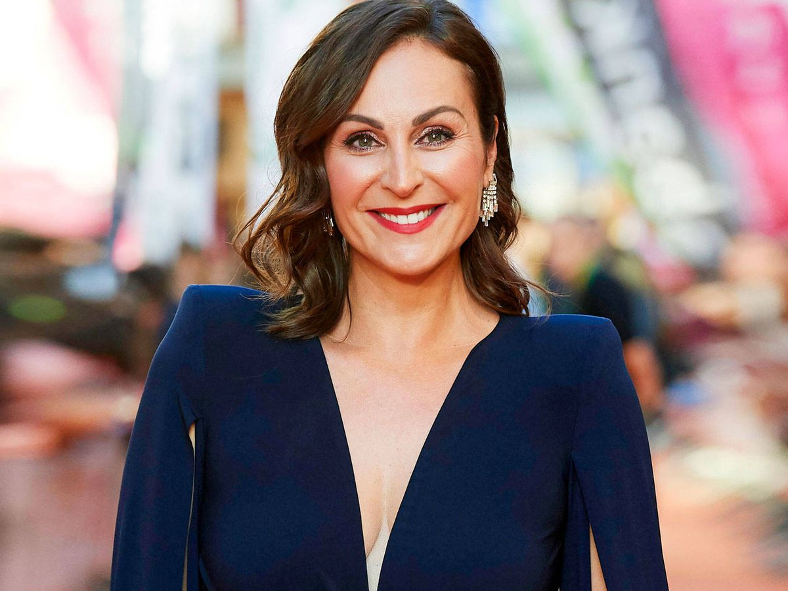

Clavo que saca otro clavo, vive en hueco ajeno. Date un tiempo, a ti mismo y encuentra, tu yo interior
He llorado por personas que no me acuerdo de su nombre ¿Cómo ganar en una relación?
¿Cómo dejar de ser un folio liso? Hemos llorado lo malo, brindado lo regular y bebido lo bueno.

Actriz de cine y televisión, humorista, presentadora, modelo y escritora. Ana Milán, ha hecho reír a españoles de todas las edades durante varias generaciones, comenzando por Camera Café y pasando por Yo soy Bea, Física o Química, Paquita Salas,
hasta llegar a últimos proyectos como Veneno, ByAnaMilán o Descarrilados. La alicantina tiene un carisma innato que hace imposible no seguirla con cuatro premios y tres libros